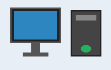

Комплектуючі ПК
Лабораторна робота №2. Демонстрація каскадних таблиць стилів.
Із чого складається ПК

Персональний комп'ютер складається з системного блока, монітора та пристроїв введення. Всередині системного блока розташовані материнська плата, процесор, оперативна пам'ять, відеокарта та накопичувач.
Зображення зліва обтікається текстом завдяки властивості float. Червона мітка у верхньому правому куті позиціонується абсолютно відносно цього блока.
Вкладки
Процесор
Процесор виконує інструкції програм. Основні характеристики: кількість ядер, тактова частота, обсяг кешу.
Відеокарта
Відеокарта формує зображення для монітора. Для ігор і графіки важливі обсяг відеопам'яті та потужність графічного процесора.
Пам'ять
Оперативна пам'ять тимчасово зберігає дані запущених програм, а накопичувач (SSD або HDD) зберігає їх постійно.
Нотатка
Цей блок стилізовано правилом із контейнера style у секції заголовка.
Довгий текст
Під час прокручування сторінки верхня панель залишається на місці, бо для неї задано position: fixed.
Каскадні таблиці стилів дозволяють відокремити оформлення від структури документа.
Стилі можна підключати трьома способами: атрибутом style, контейнером style та зовнішнім файлом.
Пріоритет зростає в такому порядку: зовнішній файл, контейнер style, атрибут style.
Селектори тегів, класів та ідентифікаторів дозволяють вибирати елементи для оформлення.
Властивість float зручна для навігаційних елементів та обтікання зображень текстом.